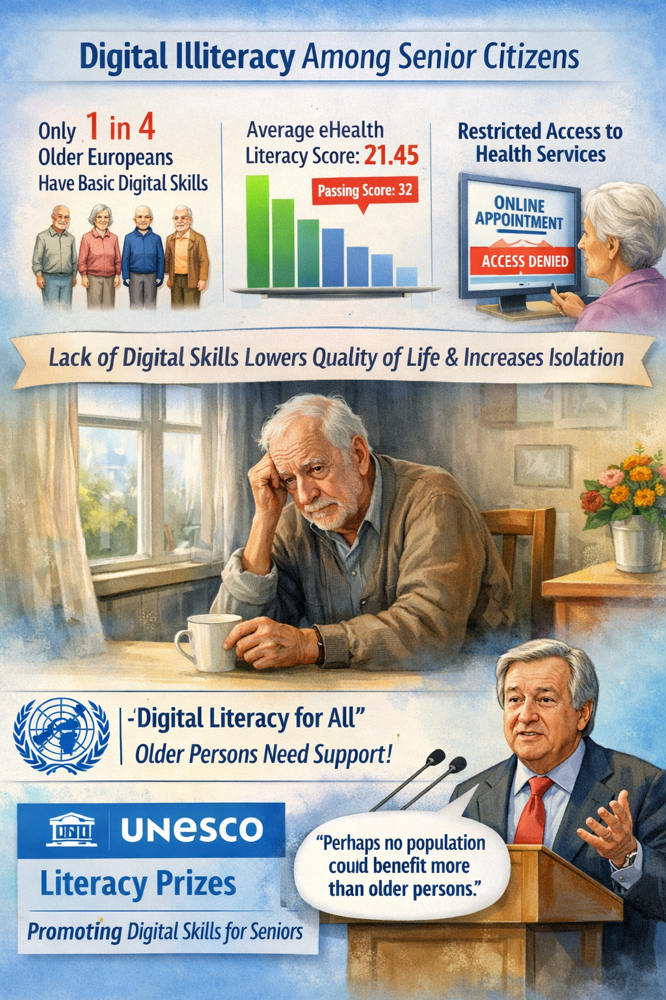

Secondary Research
Comprehensive analysis of global, national, and local perspectives on digital illiteracy among senior citizens.

A major cause of digital illiteracy among elderly people is their physical and cognitive decline. Ageing comes with loss of eyesight, slower memory, slower processing of information, and hearing loss etc. This makes it harder for them to use small screens and navigate through menus. Because of this, elderly people avoid technology. (Fadzil, 2023)
Furthermore, lack of proper education and exposure is also a significant cause. Unlike today's generations, they did not grow up surrounded by digital devices such as mobile phones, laptops etc. As a result, they lack the fundamental digital concepts. According to the journal "European Journal of Psychiatry", lack of education contributes to weaker computer skills and internet use. (Augner, 2022).
Additionally, lack of support and motivation leads to digital illiteracy among the elderly people. Many people cannot afford devices like mobile phones and even if they have the devices, they do not have proper training or motivation to use them. If younger people do not explain to them patiently, they lose confidence and remain excluded from digital participation.

A significant consequence of digital illiteracy is social isolation. In today's era, communication is shifting to online platforms like social media or messaging apps. This makes them struggle to stay connected to their family and friends. This isolation can lead to loneliness and even depression. (Augner, 2022)
Moreover, essential facilities like banking, healthcare, government services and even shopping are slowly becoming digital. Elderly people who cannot navigate through these menus face difficulties in using these services. This gap makes the elderly dependent on the young people.
In addition, digital illiteracy causes reduced autonomy and participation in society. Without it (digital literacy), elderly people are unable to take part in the online education or civic participation (such as e-voting). This limits their personal growth and reinforces stereotypes of elderly people as incapable of using the technology.

Digital illiteracy among senior citizens has been a prevalent issue throughout the world. Old people often suffer from various daily life issues due to their lack of digital skills. According to data from the UNECE, only 1 in 4 older Europeans have basic or above basic digital skills. Furthermore, a large-scale study found that the lack of digital literacy significantly lowers the life quality of older people.
Moreover, they often find themselves having restricted access to health services, leading to feelings of loneliness and isolation (nih.gov). eHealth literacy is the ability to use electronic devices to get the health services one needs. A comprehensive study regarding the eHealth Literacy of older adults concluded that the average eHealth Literacy score of senior citizens was 21.45 which is significantly lower than the passing score of 32 (biomedcentral.com).
The United Nations calls for "digital literacy for all whether young or old". The UN Secretary-General said "perhaps no population could benefit more from support, than older persons" (un.org). In order to solve this issue, the UNESCO runs the International Literacy Prizes that are specially awarded to programs that help increase the digital literacy rate of marginalized groups, including senior citizens.
Digital illiteracy is a significant issue in UK. According to Age UK report (2024), around 4.7 million people aged above 65 years do not have basic digital skills like navigating online services and above 2.3 million elder people do not even use the internet. To solve this, UK has introduced "Age UK's Digital Programme" which provides training and support for the elderly people.
Moreover, Digital illiteracy is also a substantial issue in Belgium. According to "The Digital Inclusion Barometer", 32% of the total population of Belgium have low digital skills and 8% have no skills at all. Although the digital literacy has reached the senior citizens but the ones who were above 80, women, and people with low income do not have access to the digital world.
In a developing country like Pakistan, digital illiteracy is more common. According to the study in 2022, the digital literacy rates of the elderly people are below 25% and only 36.5% of the people have access to the internet. Elderly people neither have access to the internet nor the digital skills which makes them dependent on others.
Lastly in Bangladesh, digital illiteracy among the elderly people is a serious issue. It serves as a barrier to accessing the essential services like e-banking and shopping etc. Many senior citizens of Bangladesh lack basic digital skills like using the internet or web browsers. To address this issue, community-based training programs and government initiatives are held which aim to increase the digital literacy among the senior citizens (Shafi, 2023).
Digital illiteracy among older citizens revolves around the practical challenges they face within their own communities. Older citizens report that they feel excluded from technological innovation and advancements.
60% of adults aging over 50 believe that technology is not designed with their age group in mind and more than 1/3rd admit they lack skills and speed to make the most of their digital experiences.
Community members and organizations observe that while elder people are interested in using digital tools especially for health concerns and connecting with their loved ones, lack of confidence and inadequate training opportunities limits full participation.
Many local caregivers and family members state that without proper support systems, senior citizens will face social isolation and reduced access to technological advancements in healthcare. Face-to-face guidance and education is required.
Key Findings
Digital illiteracy among senior citizens is a major issue originated from limited education, lack of exposure and motivation, age-associated physical decline, and mentaldeterioration.
Its consequences include social isolation, increase in dependency on others, and inaccessibility of essential services like banking and healthcare.
Globally, elderly people from developed countries of Europe to developing countries of South Asia struggle with basic digital tasks. To counter this, governments and NGOs are conducting training initiatives and digital inclusion programs.
The essence: Education, mentorship, and affordable access can solve this problem.